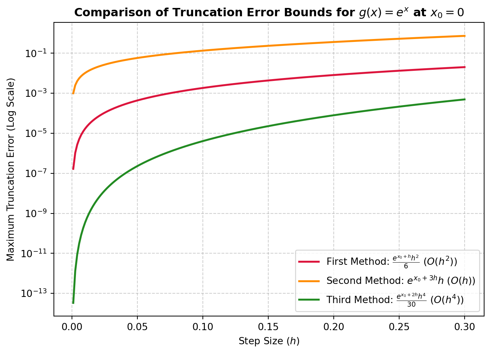
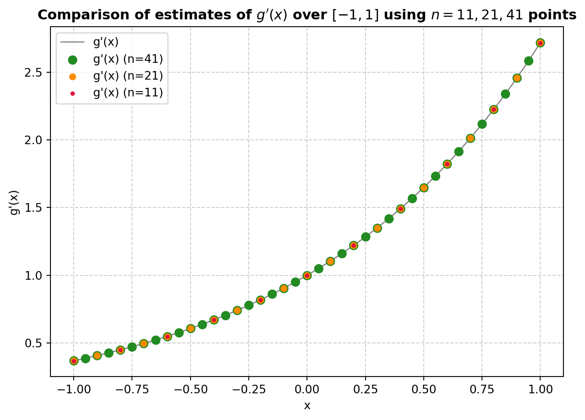
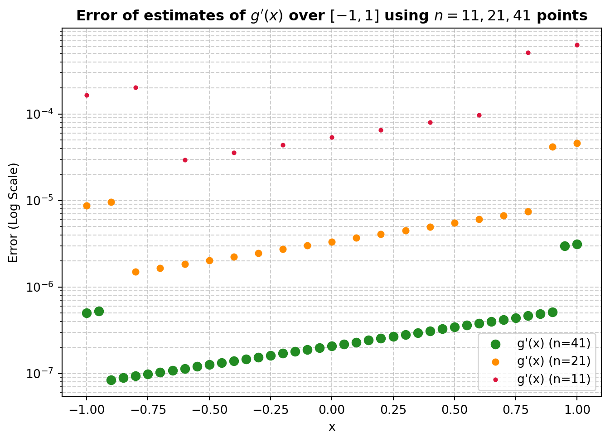
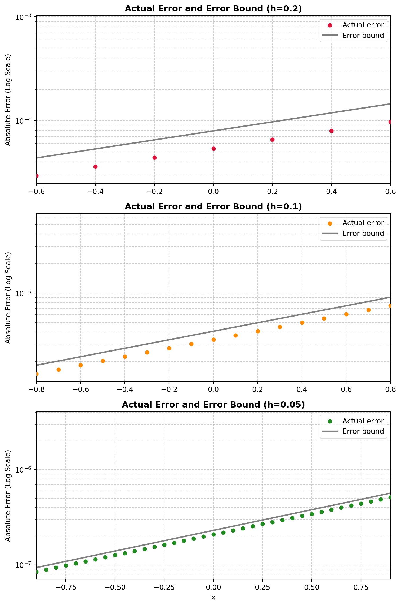
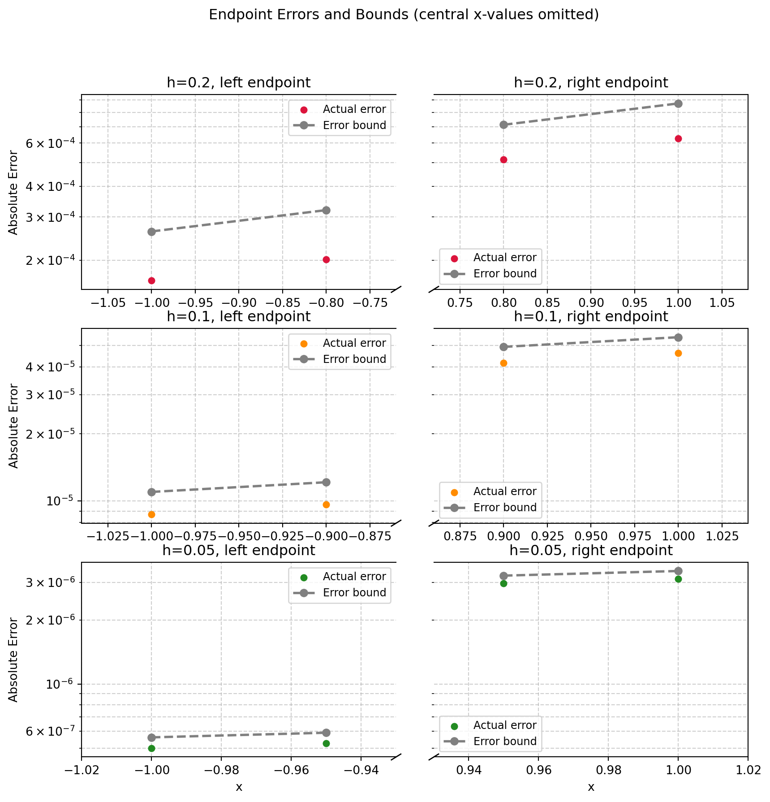

# necessary imports
import numpy as np
import sympy as sp
import matplotlib.pyplot as plt
from tabulate import tabulateProject 3 - Numerical Differentiation
Introduction
Numerical differentiation is a useful tool when working to understand the patterns driving real-world discrete data. Many methods exist for approximating the first derivative of a given value in a set of evenly spaced function data points, but not all are equally effective. In this report we will first evaluate the efficacy of three different approximations of \(f'(x)\) based on their respective errors.
\[f'(x_0) \approx \frac{f(x_0+h)-f(x_0-h)}{2h} \tag{1}\]
\[f'(x_0) \approx \frac{f(x_0+3h) - f(x_0-h)}{4h} \tag{2}\]
\[f'(x_0) \approx \frac{8f(x_0+h)-8f(x_0-h) - f(x_0+2h) + f(x_0-2h)}{12h} \tag{3}\]
Afterwards, we will implement all three of these methods, plus a few more, in a Python program that selects the best method available to evaluate \(f'(x)\) for each point \(x\) in a set of evenly spaced function data points. We will begin by deriving each of these formulae so that we can compare their error terms.
Analysis
Approximation No. 1
First we will derive formula \((1)\): \[f'(x_0) \approx \frac{f(x_0+h)-f(x_0-h)}{2h}\]
Taylor’s Theorem states that a function can be approximated by its derivatives as such:
\(f(x) = f(x_0) + f'(x_0)(x-x_0) + \frac{f''(x_0)(x-x_0)^2}{2!} + \frac{f'''(x_0)(x-x_0)^3}{3!} + ...\)
We can use this to approximate the first derivative of the function by solving for it in the equation:
\(f'(x_0) = \frac{f(x) - f(x_0)}{x-x_0} - \frac{f''(x_0)(x-x_0)}{2!} - \frac{f'''(x_0)(x-x_0)^2}{3!} - ...\)
Now, let us assume that our discrete data is evenly spaced with a distance of \(h\) between each sequential pair of points. We can then set \(x = x_0 + h\) for an appropriately chosen \(x_0\).
-----|----------|----------|----------|-----
x0 x0 + hDoing this allows us to simplify the above equation:
\(f'(x_0) = \frac{f(x_0+h) - f(x_0)}{x_0+h-x_0} - \frac{f''(x_0)(x_0+h-x_0)}{2!} - \frac{f'''(x_0)(x_0+h-x_0)^2}{3!} - ...\)
\(f'(x_0) = \frac{f(x_0+h) - f(x_0)}{h} - \frac{f''(x_0)(h)}{2!} - \frac{f'''(x_0)(h)^2}{3!} - ...\)
If we instead set \(x = x_0 -h\), we get a slightly different equation, fit on a different stencil:
-----|----------|----------|----------|-----
x0 - h x0 \(f'(x_0) = \frac{f(x_0-h) - f(x_0)}{-h} - \frac{f''(x_0)(-h)}{2!} - \frac{f'''(x_0)(-h)^2}{3!} - ...\)
\(f'(x_0) = \frac{f(x_0) - f(x_0-h)}{h} + \frac{f''(x_0)(h)}{2!} - \frac{f'''(x_0)(h)^2}{3!} - ...\)
We can combine these equations to create a new stencil that is based on 3 points:
-----|----------|----------|----------|----------|-----
x0 - h x0 x0 + hIf we add these two different approximations of \(f'(x_0)\) together, we get the following equation:
\(2f'(x_0) = \frac{f(x_0+h)-f(x_0-h)}{h} + 0h - \frac{2f'''(x_0)(h)^2}{3!} - ...\)
Dividing by 2 gives us our first approximation for \(f'(x_0)\) for this project in the first term of the equation:
\(f'(x_0) = \frac{f(x_0+h)-f(x_0-h)}{2h} - \frac{f'''(x_0)(h)^2}{3!} - ...\)
By Taylor’s Theorem, we can then write the infinite series as an error term:
\(f'(x_0) = \frac{f(x_0+h)-f(x_0-h)}{2h} - \frac{f'''(\xi)(h)^2}{3!}\), where \(\xi \in (x_0 - h, x_0 +h)\)
In this error term, \(f'''(\xi)\) and \(3!\) are constants; the only variable term is \(h^2\). Thus, the error term will behave like the function \(h^2\). So, this approximation has \(O(h^2)\) convergence; that is, quadratic convergence.
Approximation No. 2
Next we will derive formula \((2)\):
\[f'(x_0) \approx \frac{f(x_0+3h) - f(x_0-h)}{4h}\]
For our second approximation, we will want to create a formula for the following stencil:
-----|----------|----------|----------|----------|-----
x0 - h x0 x0 + 3hWe can use our previous formula where we set \(x = x_0 - h\):
\(f'(x_0) = \frac{f(x_0) - f(x_0-h)}{h} + \frac{f''(x_0)(h)}{2!} - \frac{f'''(x_0)(h)^2}{3!} - ...\)
And a new one, where we set \(x = x_0 + 3h\):
\(f'(x_0) = \frac{f(x_0+3h) - f(x_0)}{3h} - \frac{f''(x_0)(3h)}{2!} - \frac{f'''(x_0)(3h)^2}{3!} - ...\)
This time, we will multiply the second equation by 3:
\(3f'(x_0) = \frac{f(x_0+3h) - f(x_0)}{h} - \frac{f''(x_0)(9h)}{2!} - \frac{27f'''(x_0)(h)^2}{3!} - ...\)
As before, we now add the two equations together:
\(4f'(x_0) = \frac{f(x_0+3h) - f(x_0-h)}{h} - f''(x_0)(4h) - \frac{28f'''(x_0)(h)^2}{3!} - ...\)
Dividing both sides by 4 gives the second approximation for this project in the first term:
\(f'(x_0) = \frac{f(x_0+3h) - f(x_0-h)}{4h} - f''(x_0)(h) - \frac{7f'''(x_0)(h)^2}{6} - ...\)
Once again, using Taylor’s Theorem we can rewrite the series and identify its leading error term:
\(f'(x_0) = \frac{f(x_0+3h) - f(x_0-h)}{4h} - f''(\xi)(h)\), with \(\xi \in (x_0 -h, x_0+3h)\)
\(f''(\xi)\) is a constant, so our error term will grow proportionately to the variable term \(h\). So, this approximation converges with \(O(h)\), linear convergence.
Approximation No. 3
Lastly, we will derive formula \((3)\):
\[f'(x_0) \approx \frac{8f(x_0+h)-8f(x_0-h) - f(x_0+2h) + f(x_0-2h)}{12h}\]
Our final approximation will use the following stencil:
-----|----------|----------|----------|----------|-----
x0 - 2h x0 - h x0 x0 + h x0 + 2hWe will create this approximation by combining our first approximation, which uses \(x_0 - h\) and \(x_0 +h\):
\(f'(x_0) = \frac{f(x_0+h)-f(x_0-h)}{2h} - \frac{f'''(x_0)(h)^2}{3!} - \frac{f^{(5)}(x_0)(h)^4}{5!}-...\)
…with a new one derived the same way that uses \(x_0 - 2h\) and \(x_0 + 2h\) instead:
\(f'(x_0) = \frac{f(x_0+2h)-f(x_0-2h)}{4h} - \frac{f'''(x_0)(2h)^2}{3!} - \frac{f^{(5)}(x_0)(2h)^4}{5!}-...\)
\(f'(x_0) = \frac{f(x_0+2h)-f(x_0-2h)}{4h} - \frac{4f'''(x_0)(h)^2}{3!} - \frac{16f^{(5)}(x_0)(h)^4}{5!}-...\)
We will multiply the first equation by 4:
\(4f'(x_0) = \frac{4f(x_0+h)-4f(x_0-h)}{2h} - \frac{4f'''(x_0)(h)^2}{3!} - \frac{4f^{(5)}(x_0)(h)^4}{5!}-...\)
Now, we can subtract the second equation from the first to eliminate the third order derivative term:
\(3f'(x_0) = \frac{4f(x_0+h)-4f(x_0-h)}{2h} -\frac{f(x_0+2h)-f(x_0-2h)}{4h} - \frac{4f'''(x_0)(h)^2}{3!} +\frac{4f'''(x_0)(h)^2}{3!} - \frac{4f^{(5)}(x_0)(h)^4}{5!} + \frac{16f^{(5)}(x_0)(h)^4}{5!} -...\)
\(3f'(x_0) = \frac{4f(x_0+h)-4f(x_0-h)}{2h} -\frac{f(x_0+2h)-f(x_0-2h)}{4h} + \frac{12f^{(5)}(x_0)(h)^4}{5!} -...\)
Multiplying the numerator and denominator of the first term by 2, we can combine the first two terms:
\(3f'(x_0) = \frac{8f(x_0+h)-8f(x_0-h)}{4h} -\frac{f(x_0+2h)-f(x_0-2h)}{4h} + \frac{12f^{(5)}(x_0)(h)^4}{5!} -...\)
\(3f'(x_0) = \frac{8f(x_0+h)-8f(x_0-h) - f(x_0+2h) + f(x_0-2h)}{4h} + \frac{12f^{(5)}(x_0)(h)^4}{5!} -...\)
We can now divide by 3 to yield the third and final approximation for this project, in the first term:
\(f'(x_0) = \frac{8f(x_0+h)-8f(x_0-h) - f(x_0+2h) + f(x_0-2h)}{12h} + \frac{4f^{(5)}(x_0)(h)^4}{5!} -...\)
Once again, we can convert the rest of the series into an error term: \(f'(x_0) = \frac{8f(x_0+h)-8f(x_0-h) - f(x_0+2h) + f(x_0-2h)}{12h} + \frac{4f^{(5)}(\xi)(h)^4}{5!}\), with \(\xi \in (x_0 -2h, x_0+2h)\)
As before, \(\frac{4f^{(5)}(\xi)}{5!}\) is a constant; the only variable term in the error term is \(h^4\). Therefore, we can expect the error term to behave like a multiple of \(h^4\), so we say the series converges with \(O(h^4)\).
Performance Prediction
Based on our analysis, we found that approximation \((1)\) had quadratic (\(O(h^2)\)) convergence, approximation \((2)\) had linear (\(O(h)\)) convergence, and approximation \((3)\) had quartic (\(O(h^4)\)) convergence. Based on this, we can infer that the method \((3)\) will perform the best, as it will converge to the true value the fastest out of the three methods. It is, however, also worth noting that all three methods make use of points that are a different number of steps away from \(x_0\); method \((1)\) uses only points that are 1 step away, method \((2)\) uses points a maximum of 3 steps away, and method \((3)\) uses points that are at most 2 steps away. While I don’t expect that these differences will overcome the differences in the methods’ error terms, I would predict that, of two methods that have the same error term, the one that uses points closest to \(x_0\) would be more effective.
Specific Error Bounds
For this project, the function of interest is \(g(x) = e^x\). Since \(e^x\) is monotonically increasing and \(g^{(n)} = e^x\), we know that the maximum absolute value of \(f^{(n)}(\xi)\) will always occur at the right endpoint of \(\xi\)’s bound. So, we can determine our specific error bounds for each method of the three methods of approximating \(f'(x)\).
For \((1)\):
\(\frac{f'''(\xi)(h)^2}{3!}\), where \(\xi \in (x_0 - h, x_0 +h)\)
—> \(\frac{e^{(x_0+h)}(h)^2}{6}\)
For \((2)\):
\(f''(\xi)(h)\), with \(\xi \in (x_0 -h, x_0+3h)\)
—> \(e^{(x_0+3h)}(h)\)
And for \((3)\):
\(\frac{4f^{(5)}(\xi)(h)^4}{5!}\), with \(\xi \in (x_0 -2h, x_0+2h)\)
—> \(\frac{e^{(x_0+2h)}(h)^4}{30}\)
We can graph all three error bounds on the same set of axes:
# define parameters
x0 = 0.0
h = np.linspace(0.001, 0.3, 200)
# define the specific error bounds
error_1 = (np.exp(x0 + h) * h**2) / 6
error_2 = np.exp(x0 + 3 * h) * h
error_3 = (np.exp(x0 + 2 * h) * h**4) / 30
# create the plot
plt.figure(figsize=(8, 5.5))
plt.plot(h, error_1, label=r'First Method: $\frac{e^{x_0+h}h^2}{6}$ ($O(h^2)$)', color='crimson', lw=2)
plt.plot(h, error_2, label=r'Second Method: $e^{x_0+3h}h$ ($O(h)$)', color='darkorange', lw=2)
plt.plot(h, error_3, label=r'Third Method: $\frac{e^{x_0+2h}h^4}{30}$ ($O(h^4)$)', color='forestgreen', lw=2)
# labels and title
plt.title('Comparison of Truncation Error Bounds for $g(x) = e^x$ at $x_0=0$', fontsize=12, fontweight='bold')
plt.xlabel('Step Size ($h$)', fontsize=10)
plt.ylabel('Maximum Truncation Error (Log Scale)', fontsize=10)
plt.yscale('log') # Used log scale to capture the huge differences in order of accuracy
plt.grid(True, which="both", linestyle="--", alpha=0.6)
plt.legend(fontsize=10, loc='best')
plt.show()
Looking at this graph (note the log scale on the y-axis), it becomes clear that the maxmimum error of method \((3)\) is far less than that of the other two for small values of h. This further supports the prediction that the third method will perform the best overall. However, it is worth noting that for larger \(h\) (\(h>1.25\)), method \((1)\) begins to outperform method \((3)\). I would guess that this is potentially due to a large \(h\) acting in combination with the more distant points used in method \((3)\) to provide the approximation with more distant values that are less relevant to the \(f'(x_0)\) being estimated. Further supporting this, at no point does method \((2)\) begin to overtake method \((1)\); not only does \((2)\) have worse convergence than \((1)\), it also uses more distant points.
Computer Program
Now that we have investigated the performance of each method, we will implement them in Python. In addition to the three methods we analyzed, we will also include some additional methods in our program:
\[f'(x) = \frac{1}{12h}\left[-25f(x)+48f(x+h)-36f(x+2h)+16f(x+3h)-3f(x+4h)\right]+\frac{h^4}{5}f^{(5)}(\xi), \quad \xi \in [x, x+4h] \tag{4}\]
\[f'(x) = \frac{1}{42h}\left[-18f(x-h)-5f(x)+18f(x+h)+9f(x+2h)-4f(x+3h)\right]+\frac{5h^3}{28}f^{(4)}(\xi), \quad \xi \in [x-h, x+3h] \tag{5}\]
\[f'(x) = \frac{1}{12h}\left[25f(x)-48f(x-h)+36f(x-2h)-16f(x-3h)+3f(x-4h)\right]+\frac{h^4}{5}f^{(5)}(\xi), \quad \xi \in [x-4h, x] \tag{6}\]
\[f'(x) = \frac{1}{42h}\left[18f(x+h)+5f(x)-18f(x-h)-9f(x-2h)+4f(x-3h)\right]-\frac{5h^3}{28}f^{(4)}(\xi), \quad \xi \in [x-3h, x+h] \tag{7}\]
Approximations \((4)\) and \((6)\) are useful for approximating derivatives at the left and right endpoints of the sequence of known values, respectively. Approximations \((5)\) and \((7)\) are similar, generating estimates for points immediately adjacent to the right and left endpoint.
Derivative Function Definitions
The first real bit of work we need to do is define our numeric first derivative functions in Python. These will be the functions our program can choose from when tasked with finding the first derivative of \(x\).
def fprime_1(i, step, vals, verbose=False):
"""
Approximate f'(x) using the 3-point midpoint formula.
O(h^2) convergence, farthest step = 1.
Takes integer grid index i, step size h, and a dictionary of function values keyed by integer grid index.
"""
# fetch required f(x) values from the vals dictionary
try:
fm1 = vals[i - 1]
fp1 = vals[i + 1]
# return None if any of the required values are not found
except KeyError:
if verbose:
print("(1) Input values not found in vals dictionary.")
return None
if verbose:
print("(1) is valid.")
# approximate the derivative
return (fp1 - fm1) / (2 * step)
def fprime_2(i, step, vals, verbose=False):
"""
Approximate f'(x) using an unbalanced 3-point formula.
O(h) convergence, farthest step = 3.
Takes integer grid index i, step size h, and a dictionary of function values keyed by integer grid index.
"""
# fetch required f(x) values from the vals dictionary
try:
fm1 = vals[i - 1]
fp3 = vals[i + 3]
# return None if any of the required values are not found
except KeyError:
if verbose:
print("(2) Input values not found in vals dictionary.")
return None
if verbose:
print("(2) is valid.")
# approximate the derivative
return (fp3 - fm1) / (4 * step)
def fprime_3(i, step, vals, verbose=False):
"""
Approximate f'(x) using the 5-point midpoint formula.
O(h^4) convergence, farthest step = 2.
Takes integer grid index i, step size h, and a dictionary of function values keyed by integer grid index.
"""
# fetch required f(x) values from the vals dictionary
try:
fm2 = vals[i - 2]
fm1 = vals[i - 1]
fp1 = vals[i + 1]
fp2 = vals[i + 2]
# return None if any of the required values are not found
except KeyError:
if verbose:
print("(3) Input values not found in vals dictionary.")
return None
if verbose:
print("(3) is valid.")
# approximate the derivative
return (
fm2 - 8 * fm1 + 8 * fp1 - fp2
) / (12 * step)
def fprime_4(i, step, vals, verbose=False):
"""
Approximate f'(x) using a 5-point forward formula.
O(h^4) convergence, farthest step = 4.
Takes integer grid index i, step size h, and a dictionary of function values keyed by integer grid index.
"""
# fetch required f(x) values from the vals dictionary
try:
f0 = vals[i]
fp1 = vals[i + 1]
fp2 = vals[i + 2]
fp3 = vals[i + 3]
fp4 = vals[i + 4]
# return None if any of the required values are not found
except KeyError:
if verbose:
print("(4) Input values not found in vals dictionary.")
return None
if verbose:
print("(4) is valid.")
# approximate the derivative
return (
-25 * f0
+ 48 * fp1
- 36 * fp2
+ 16 * fp3
- 3 * fp4
) / (12 * step)
def fprime_5(i, step, vals, verbose=False):
"""
Approximate f'(x) using a 5-point unbalanced formula.
O(h^3) convergence, farthest step = 3.
Takes integer grid index i, step size h, and a dictionary of function values keyed by integer grid index.
"""
# fetch required f(x) values from the vals dictionary
try:
fm1 = vals[i - 1]
f0 = vals[i]
fp1 = vals[i + 1]
fp2 = vals[i + 2]
fp3 = vals[i + 3]
# return None if any of the required values are not found
except KeyError:
if verbose:
print("(5) Input values not found in vals dictionary.")
return None
if verbose:
print("(5) is valid.")
# approximate the derivative
return (
-18 * fm1
- 5 * f0
+ 18 * fp1
+ 9 * fp2
- 4 * fp3
) / (42 * step)
def fprime_6(i, step, vals, verbose=False):
"""
Approximate f'(x) using a 5-point backward formula.
O(h^4) convergence, farthest step = 4.
Takes integer grid index i, step size h, and a dictionary of function values keyed by integer grid index.
"""
# fetch required f(x) values from the vals dictionary
try:
fm4 = vals[i - 4]
fm3 = vals[i - 3]
fm2 = vals[i - 2]
fm1 = vals[i - 1]
f0 = vals[i]
# return None if any of the required values are not found
except KeyError:
if verbose:
print("(6) Input values not found in vals dictionary.")
return None
if verbose:
print("(6) is valid.")
# approximate the derivative
return (
25*f0
- 48*fm1
+ 36*fm2
- 16*fm3
+ 3*fm4
) / (12 * step)
def fprime_7(i, step, vals, verbose=False):
"""
Approximate f'(x) using a 5-point unbalanced formula flipped for negative h.
O(h^3) convergence, farthest step = -3.
Takes integer grid index i, step size h, and a dictionary of function values
keyed by integer grid index.
"""
# fetch required f(x) values from the vals dictionary
try:
fp1 = vals[i + 1]
f0 = vals[i]
fm1 = vals[i - 1]
fm2 = vals[i - 2]
fm3 = vals[i - 3]
# return None if any of the required values are not found
except KeyError:
if verbose:
print("(7) Input values not found in vals dictionary.")
return None
if verbose:
print("(7) is valid.")
# approximate the derivative
return (
18 * fp1 + 5 * f0 - 18 * fm1 - 9 * fm2 + 4 * fm3
) / (42 * step)The derive Function
The derive function is the centerpiece of this project. When provided a properly formatted table of function inputs and outputs, as well as a dictionary of candidate functions, it will return the best available estimate for \(f'(x_0)\) out of the options available. The ‘best’ estimate is defined as the one given by the function with the highest order of convergence, with the minimum number of steps to the furthest point on its stencil as the tiebreaker. So, when asked to choose between two functions with, for instance, quadratic convergence, the first of which uses \([x-2, x+2]\) while the second uses \([x-3, x+1]\), it will choose the first function.
It’s also worth noting that derive takes what might be considered non-standard inputs. Initially, I wanted to implement the values of \(f\) as a dictionary, like so:
f = {
2.1: -1.709847,
2.2: -1.373823,
2.3: -1.119214,
2.4: '...'
}However, when doing this I quickly ran into the issue of floating point error when trying to increment keys by \(h\):
x = 2.2
h = 0.1
x_plus_h = x + h
try:
print(f[x_plus_h])
except:
print(f"Error: {x_plus_h} is not a valid key!")Error: 2.3000000000000003 is not a valid key!This made it impossible to ensure that the needed values would be retrieved. One solution would have been to simply round each key, but I was concerned about how this could potentially misalign keys when using a small \(h\). To get around this problem, I chose to use an integer-indexed grid:
f = {
0: -1.709847,
1: -1.373823,
2: -1.119214,
3: '...'
}This way, as long as you know the first true \(x\) value on the grid and the step size of the grid, you can safely retrieve all the values you need. This is also why derive requires x_start as an input.
x = 2.2
h = 0.1
x_start = 2.1
# one instance of rounding is still necessary
# however, it is much safer, since in this implementation all keys are integers
# there is no need to worry about x = 2.100001 and x = 2.100002 being confused by rounding
x_key = round((x - x_start) / h)
x_plus_h_key = x_key + 1
print(f[x_plus_h_key])-1.119214The other notable input is the candidate function dictionary. This dictionary stores all functions you want to give derive the option to use. It is keyed by an ID (in this case, the function number in the report), and each corresponding value is a list containing the function itself, its order of convergence as an integer (e.g., quadratic = 2), and the distance of its furthest input value from \(x_0\). For now, these values must be input manually. I chose this form of input so I could easily keep track of the functions and their ranking criteria in one place.
Now, for the actual definition of derive:
def derive(f_vals, x_0, x_start, step, candidate_functions, verbose=False):
"""
Approximate f'(x_0) using the best candidate function from a set of candidate functions.
The best function is determined by maximizing the order of convergence and minimizing the furthest number of steps from x_0.
In the event of a complete tie, the first function is chosen by max().
Takes the following parameters:
f_vals:
Dictionary of function values keyed by integer grid index.
x_0:
x-coordinate at which the derivative is wanted.
x_start:
x-coordinate corresponding to index 0.
step:
Grid spacing h.
candidate_functions:
Dictionary of the form:
{
number: [function, order_of_convergence, furthest_step]
}
"""
if verbose:
print(f"Finding candidate functions for f'({x_0}) approximation...")
# Convert the actual x-coordinate to an integer grid index.
i = round((x_0 - x_start) / step)
candidate_approximations = {}
# attempt to compute an approximation for each candidate function
for func_num, func_info in candidate_functions.items():
approximation = func_info[0](
i, step, f_vals, verbose
)
# keep only the approximations that were successfully computed
if approximation is not None:
candidate_approximations[func_num] = approximation
# return None if no candidate functions were successfully computed
if len(candidate_approximations) == 0:
if verbose:
print("No candidate functions found.")
return None
if verbose:
print(
"Finding the best candidate function "
"based on order of convergence & most distant step..."
)
# create a subset of the functions dictionary containing only the valid candidate functions
valid_functions = {
key: candidate_functions[key]
for key in candidate_approximations
}
# find the best function by maximizing order of convergence and minimizing the furthest step.
best_function = max(
valid_functions,
key=lambda x: (
valid_functions[x][1], # first maximize order of convergence.
-valid_functions[x][2] # for equal orders, minimize the furthest step.
# max() returns the first entry in the event of a complete tie.
)
)
if verbose:
print(f"Best function: {best_function}")
print(
f"Approximation: f'({x_0}) = "
f"{candidate_approximations[best_function]}"
)
return candidate_approximations[best_function]Checking outputs
We will now verify that derive returns the expected values from the provided sample of points. Our expected values are:
| x | 2.1 | 2.2 | 2.3 | 2.4 | 2.5 | 2.6 | 2.7 |
|---|---|---|---|---|---|---|---|
| f’(x) | 3.89934 | 2.87688 | 2.2497 | 1.83776 | 1.5904 | 1.3555 | 0.39479 |
Now for our estimate:
# initialize our function dictionary
function_dict = {
1: [ fprime_1, 2, 1], # {number: [function, order of convergence, # of steps to furthest point]}
2: [ fprime_2, 1, 3],
3: [ fprime_3, 4, 2],
4: [ fprime_4, 4, 4],
5: [ fprime_5, 3, 3],
6: [ fprime_6, 4, 4],
7: [ fprime_7, 3, 3]
}
# define our core parameters
x_start = 2.1
step = 0.1
# initialize our integer-indexed table of values
f_vals = {
0: -1.709847,
1: -1.373823,
2: -1.119214,
3: -0.9160143,
4: -0.7470223,
5: -0.6015966,
6: -0.5123467
}
# compute and print each derivative
for val in f_vals.keys():
# to get x from the index map, we use the formula: x = x_start + val * step
x = round(x_start + val * step, 10)
print(f"f'({x}) = {round(derive(f_vals, x, x_start, step, function_dict, verbose=False), 5)}")f'(2.1) = 3.89934
f'(2.2) = 2.87688
f'(2.3) = 2.2497
f'(2.4) = 1.83776
f'(2.5) = 1.5904
f'(2.6) = 1.3555
f'(2.7) = 0.39479Looking at the printout, we can see that, when rounded to 5 decimal places, our code reproduces the expected values exactly.
Approximations of \(g(x) = e^x\)
Now that we’ve verified our function works as intended for the test points, we approximate \(g'(x)\) over the interval \([-1, 1]\), with varying step sizes. Note that in the code blocks below, \(g(x)\) is taken to be the true value of \(g'(x)\), since \(g(x) = e^x = g'(x)\).
# general setup
# use the evalExpression function from Project 1
def evalExpression(f, symb, input_vals):
'''
Evaluates the provided single-variable expression for a list of input values.
Takes a symbolic expression f, symbol sym, and array-like input_vals as input.
Returns a list of the output values.
'''
# list comprehension is a readable way to generate the outputs of a symbolic expression for x
# this is essentially a compact for loop
return [float(f.subs(symb, val)) for val in input_vals]
# define our symbols and function
x = sp.symbols('x')
g = sp.exp(x)
# the x-value corresponding to the start of the integer index
# should be -1 for all 3 intervals
x_start_g = -111 Points, \(h=0.2\)
# first interval: 11 points, [-1, 1]
# get the values of g on the interval [-1, 1] at 11 evenly spaced points
i1 = np.linspace(-1, 1, 11)
g_vals_1 = dict(zip(range(11),evalExpression(g, x, i1)))
# calculate the step size
step_g1 = round(i1[1] - i1[0], 10)
# compute the derivative estimates
estimates_g1 = {}
for val in g_vals_1.keys():
xi = round(x_start_g + (val) * step_g1, 10)
estimates_g1[val] = round(derive(g_vals_1, xi, x_start_g, step_g1, function_dict, verbose=False), 10)
# compute the errors
errors_g1 = np.array(list(g_vals_1.values())) - np.array(list(estimates_g1.values()))
# organize for printout
table_g1 = {
"x": np.round(i1, 10),
"g'(x)": np.round(np.array(list(g_vals_1.values())), 10),
"g'(x) est.": np.round(list(estimates_g1.values()), 10),
"error": np.round(errors_g1, 10)
}
# print table output
print(tabulate(table_g1, headers="keys")) x g'(x) g'(x) est. error
---- -------- ------------ -----------
-1 0.367879 0.367714 0.000165347
-0.8 0.449329 0.449127 0.000201955
-0.6 0.548812 0.548782 2.94097e-05
-0.4 0.67032 0.670284 3.5921e-05
-0.2 0.818731 0.818687 4.38741e-05
0 1 0.999946 5.35879e-05
0.2 1.2214 1.22134 6.54524e-05
0.4 1.49182 1.49174 7.99437e-05
0.6 1.82212 1.82202 9.76435e-05
0.8 2.22554 2.22503 0.000513521
1 2.71828 2.71765 0.00062721621 Points, \(h=0.1\)
# second interval: 21 points, [-1, 1]
# get the values of g on the interval [-1, 1] at 21 evenly spaced points
i2 = np.linspace(-1, 1, 21)
g_vals_2 = dict(zip(range(21), evalExpression(g, x, i2)))
# calculate the step size
step_g2 = round(i2[1] - i2[0], 10)
# compute the derivative estimates
estimates_g2 = {}
for val in g_vals_2.keys():
xi = round(x_start_g + (val) * step_g2, 10)
estimates_g2[val] = round(derive(g_vals_2, xi, x_start_g, step_g2, function_dict, verbose=False), 10)
# compute the errors
errors_g2 = np.array(list(g_vals_2.values())) - np.array(list(estimates_g2.values()))
# organize for printout
table_g2 = {
"x": np.round(i2, 10),
"g'(x)": np.round(np.array(list(g_vals_2.values())), 10),
"g'(x) est.": np.round(list(estimates_g2.values()), 10),
"error": np.round(errors_g2, 10)
}
# print table output
print(tabulate(table_g2, headers="keys")) x g'(x) g'(x) est. error
---- -------- ------------ -----------
-1 0.367879 0.367871 8.7058e-06
-0.9 0.40657 0.40656 9.6214e-06
-0.8 0.449329 0.449327 1.4995e-06
-0.7 0.496585 0.496584 1.6573e-06
-0.6 0.548812 0.54881 1.8316e-06
-0.5 0.606531 0.606529 2.0242e-06
-0.4 0.67032 0.670318 2.237e-06
-0.3 0.740818 0.740816 2.4724e-06
-0.2 0.818731 0.818728 2.7324e-06
-0.1 0.904837 0.904834 3.0197e-06
0 1 0.999997 3.3373e-06
0.1 1.10517 1.10517 3.6883e-06
0.2 1.2214 1.2214 4.0762e-06
0.3 1.34986 1.34985 4.5049e-06
0.4 1.49182 1.49182 4.9786e-06
0.5 1.64872 1.64872 5.5023e-06
0.6 1.82212 1.82211 6.081e-06
0.7 2.01375 2.01375 6.7205e-06
0.8 2.22554 2.22553 7.4273e-06
0.9 2.4596 2.45956 4.17061e-05
1 2.71828 2.71824 4.60924e-0541 Points, \(h=0.05\)
# third interval: 41 points, [-1, 1]
# get the values of g on the interval [-1, 1] at 41 evenly spaced points
i3 = np.linspace(-1, 1, 41)
g_vals_3 = dict(zip(range(41), evalExpression(g, x, i3)))
# calculate the step size
step_g3 = round(i3[1] - i3[0], 10)
# compute the derivative estimates
estimates_g3 = {}
for val in g_vals_3.keys():
xi = round(x_start_g + (val) * step_g3, 10)
estimates_g3[val] = round(derive(g_vals_3, xi, x_start_g, step_g3, function_dict, verbose=False), 10)
# compute the errors
errors_g3 = np.array(list(g_vals_3.values())) - np.array(list(estimates_g3.values()))
# organize for printout
table_g3 = {
"x": np.round(i3, 10),
"g'(x)": np.round(np.array(list(g_vals_3.values())), 10),
"g'(x) est.": np.round(list(estimates_g3.values()), 10),
"error": np.round(errors_g3, 10)
}
# print table output
print(tabulate(table_g3, headers="keys")) x g'(x) g'(x) est. error
----- -------- ------------ ----------
-1 0.367879 0.367879 5e-07
-0.95 0.386741 0.38674 5.257e-07
-0.9 0.40657 0.40657 8.47e-08
-0.85 0.427415 0.427415 8.9e-08
-0.8 0.449329 0.449329 9.36e-08
-0.75 0.472367 0.472366 9.84e-08
-0.7 0.496585 0.496585 1.035e-07
-0.65 0.522046 0.522046 1.088e-07
-0.6 0.548812 0.548812 1.144e-07
-0.55 0.57695 0.57695 1.203e-07
-0.5 0.606531 0.606531 1.264e-07
-0.45 0.637628 0.637628 1.329e-07
-0.4 0.67032 0.67032 1.397e-07
-0.35 0.704688 0.704688 1.468e-07
-0.3 0.740818 0.740818 1.544e-07
-0.25 0.778801 0.778801 1.623e-07
-0.2 0.818731 0.818731 1.706e-07
-0.15 0.860708 0.860708 1.793e-07
-0.1 0.904837 0.904837 1.885e-07
-0.05 0.951229 0.951229 1.982e-07
0 1 1 2.084e-07
0.05 1.05127 1.05127 2.191e-07
0.1 1.10517 1.10517 2.303e-07
0.15 1.16183 1.16183 2.421e-07
0.2 1.2214 1.2214 2.546e-07
0.25 1.28403 1.28403 2.676e-07
0.3 1.34986 1.34986 2.813e-07
0.35 1.41907 1.41907 2.957e-07
0.4 1.49182 1.49182 3.108e-07
0.45 1.56831 1.56831 3.268e-07
0.5 1.64872 1.64872 3.436e-07
0.55 1.73325 1.73325 3.612e-07
0.6 1.82212 1.82212 3.797e-07
0.65 1.91554 1.91554 3.992e-07
0.7 2.01375 2.01375 4.197e-07
0.75 2.117 2.117 4.412e-07
0.8 2.22554 2.22554 4.638e-07
0.85 2.33965 2.33965 4.875e-07
0.9 2.4596 2.4596 5.126e-07
0.95 2.58571 2.58571 2.9749e-06
1 2.71828 2.71828 3.1275e-06Results
The tables generated above are a bit cumbersome to read. Instead, we can plot all 3 estimates and \(g(x)\) on the same axes.
# generate a more continuous interval to display the true g'(x) over
# again: g'(x) = e^x = g(x) here
x_vals = np.linspace(-1, 1, 1000)
gprime_actual = evalExpression(g, x, x_vals)
# gather up all our estimates
gprime_est1 = table_g1["g'(x) est."]
gprime_est2 = table_g2["g'(x) est."]
gprime_est3 = table_g3["g'(x) est."]
# create the plot
plt.figure(figsize=(8, 5.5))
plt.plot(x_vals, gprime_actual, label="g'(x)", color="gray", lw=1, zorder=1)
plt.scatter(i3, gprime_est3, label="g'(x) (n=41)", color="forestgreen", s=50, zorder=2)
plt.scatter(i2, gprime_est2, label="g'(x) (n=21)", color="darkorange", s=25, zorder=3)
plt.scatter(i1, gprime_est1, label="g'(x) (n=11)", color="crimson", s=8, zorder=4)
# labels and title
plt.title("Comparison of estimates of $g'(x)$ over $[-1,1]$ using $n=11, 21, 41$ points", fontsize=12, fontweight='bold')
plt.xlabel('x', fontsize=10)
plt.ylabel("g'(x)", fontsize=10)
plt.grid(True, which="both", linestyle="--", alpha=0.6)
plt.legend(fontsize=10, loc='best')
plt.show()
When looking at the entire interval, the three estimates are nearly indistinguishable visually, apart from some covering more points than others. Let’s instead examine a table of our values over a smaller section of the interval.
# we'll focus on [-0.25, 0.25], or the inner quarter of the interval
# extract the correct range of values from each table above
g1_vals = zip(table_g1["x"], table_g1["g'(x) est."])
table_g1_vals = dict([(key, val) for key, val in g1_vals if (-0.25 <= key) and (key <= 0.25)])
g2_vals = zip(table_g2["x"], table_g2["g'(x) est."])
table_g2_vals = dict([(key, val) for key, val in g2_vals if (-0.25 <= key) and (key <= 0.25)])
g3_vals = zip(table_g3["x"], table_g3["g'(x) est."])
table_g3_vals = dict([(key, val) for key, val in g3_vals if (-0.25 <= key) and (key <= 0.25)])
# g1 has 3 vals, g2 has 5, g3 has 11
# organize into one table
table_x_vals = table_g3_vals.keys() # greatest common denominator
focused_table_vals = {
"x": table_x_vals,
"g'(x) (Actual)": evalExpression(g, x, table_x_vals), # again, g(x) = g'(x) for e^x
"g'(x) (n=11)": ["--" if key not in table_g1_vals.keys() else table_g1_vals[key] for key in table_x_vals],
"g'(x) (n=21)": ["--" if key not in table_g2_vals.keys() else table_g2_vals[key] for key in table_x_vals],
"g'(x) (n=41)": ["--" if key not in table_g3_vals.keys() else table_g3_vals[key] for key in table_x_vals]
}
print(tabulate(focused_table_vals, headers="keys")) x g'(x) (Actual) g'(x) (n=11) g'(x) (n=21) g'(x) (n=41)
----- ---------------- -------------- -------------- --------------
-0.25 0.778801 -- -- 0.778801
-0.2 0.818731 0.818686879 0.8187280207 0.818731
-0.15 0.860708 -- -- 0.860708
-0.1 0.904837 -- 0.9048343983 0.904837
-0.05 0.951229 -- -- 0.951229
0 1 0.9999464121 0.9999966627 1
0.05 1.05127 -- -- 1.05127
0.1 1.10517 -- 1.1051672298 1.10517
0.15 1.16183 -- -- 1.16183
0.2 1.2214 1.2213373058 1.221398682 1.2214
0.25 1.28403 -- -- 1.28403This table makes it clear how much data is gained from using a larger \(n\) (and thus a smaller \(h\)) over the same interval. Additionally, we can see that the estimates of \(g'(x)\) improve as \(n\) increases. We can generate a complementary table of errors to investigate this further.
# we'll focus on [-0.25, 0.25], or the inner quarter of the interval
# extract the correct range of values from each table above
g1_errs = zip(table_g1["x"], table_g1["error"])
table_g1_errs = dict([(key, val) for key, val in g1_errs if (-0.25 <= key) and (key <= 0.25)])
g2_errs = zip(table_g2["x"], table_g2["error"])
table_g2_errs = dict([(key, val) for key, val in g2_errs if (-0.25 <= key) and (key <= 0.25)])
g3_errs = zip(table_g3["x"], table_g3["error"])
table_g3_errs = dict([(key, val) for key, val in g3_errs if (-0.25 <= key) and (key <= 0.25)])
# g1 has 3 vals, g2 has 5, g3 has 11
# organize into one table
focused_table_vals = {
"x": table_x_vals,
"g'(x) error (n=11)": ["--" if key not in table_g1_errs.keys() else table_g1_errs[key] for key in table_x_vals],
"g'(x) error (n=21)": ["--" if key not in table_g2_errs.keys() else table_g2_errs[key] for key in table_x_vals],
"g'(x) error (n=41)": ["--" if key not in table_g3_errs.keys() else table_g3_errs[key] for key in table_x_vals]
}
print(tabulate(focused_table_vals, headers="keys")) x g'(x) error (n=11) g'(x) error (n=21) g'(x) error (n=41)
----- -------------------- -------------------- --------------------
-0.25 -- -- 1.623e-07
-0.2 4.38741e-05 2.7324e-06 1.706e-07
-0.15 -- -- 1.793e-07
-0.1 -- 3.0197e-06 1.885e-07
-0.05 -- -- 1.982e-07
0 5.35879e-05 3.3373e-06 2.084e-07
0.05 -- -- 2.191e-07
0.1 -- 3.6883e-06 2.303e-07
0.15 -- -- 2.421e-07
0.2 6.54524e-05 4.0762e-06 2.546e-07
0.25 -- -- 2.676e-07A few things become apparent here. We see that error does indeed improve as we increase \(n\). Additionally, there is a slow but steady increase in error as we move right across the interval. A graph of the error can give us a more complete picture.
# gather up all our errors
# and make them absolute
gprime_error1 = table_g1["error"]
gprime_error2 = table_g2["error"]
gprime_error3 = table_g3["error"]
# create the plot
plt.figure(figsize=(8, 5.5))
plt.scatter(i3, gprime_error3, label="g'(x) (n=41)", color="forestgreen", s=50, zorder=2)
plt.scatter(i2, gprime_error2, label="g'(x) (n=21)", color="darkorange", s=25, zorder=3)
plt.scatter(i1, gprime_error1, label="g'(x) (n=11)", color="crimson", s=8, zorder=4)
# labels and title
plt.title("Error of estimates of $g'(x)$ over $[-1,1]$ using $n=11, 21, 41$ points", fontsize=12, fontweight='bold')
plt.xlabel('x', fontsize=10)
plt.ylabel("Error (Log Scale)", fontsize=10)
plt.yscale("log")
plt.grid(True, which="both", linestyle="--", alpha=0.6)
plt.legend(fontsize=10, loc='best')
plt.show()
Overall, the ‘ordering’ of our errors is as we expected; the estimator using the most points (and with the smallest step size) outperforms those using fewer points and larger steps.
Discussion
A few interesting patterns are present in our errors. These patterns were nearly invisible when simply looking at a graph of our estimators, but become very clear when graphed together with a log scale. Firstly, all of our errors are positive, indicating that all of our estimates were underestimates; at no point did I apply the absolute value function to these errors. Second, the two points closest to the ends of the interval on each estimator have notably higher error than the rest of the interval. Based on how I coded derive, I suspect those estimates were generated using methods \((4)\) or \((6)\), while the remainder in the center of the interval were generated using \((3)\). Method \((3)\) was our best overall method, with quartic convergence and a farthest step of 2; however, it wouldn’t have been able to be used on the two points closest to either endpoint of the interval. In these cases, methods \((4)\) and \((6)\) would have been used. These also have quartic convergence, but have their farthest point 4 steps away, causing higher overall error. The last pattern I notice is a steady increase in error over the inside of the interval. For this, I would guess that the cause is rooted in the behavior of \(g(x) = e^x\). Since \(e^x\) is its own derivative, its slope increases exponentially. I suspect that the methods implemented here cannot keep up with that rate of change, with the problem worsening as \(x\) increases. This is also likely why all of our estimates were underestimates.
We can also compare the errors we see to our predicted error bounds. Based off of how derive was coded, all of the values generated should have come from functions with quartic convergence, so we should expect our errors to scale with \(h^4\). Previously, we also determined that the constant associated with the error bound of method \((3)\), the method used over the vast majority of our interval, was \(\frac{e^{x_0+2h}h^4}{30}\). Based on that, these are our expected error bounds for that method:
| \(h\) | Error bound | Error bound as a power of 10 |
|---|---|---|
| \(0.2\) | \(\displaystyle 0.0000533333e^{x_0+0.4}\) | \(\displaystyle 5.33333 \times 10^{-5}e^{x_0+0.4}\) |
| \(0.1\) | \(\displaystyle 0.00000333333e^{x_0+0.2}\) | \(\displaystyle 3.33333 \times 10^{-6}e^{x_0+0.2}\) |
| \(0.05\) | \(\displaystyle 0.000000208333e^{x_0+0.1}\) | \(\displaystyle 2.08333 \times 10^{-7}e^{x_0+0.1}\) |
We can plot the bounds alongside our actual errors to verify that our errors are reasonable.
fig, axes = plt.subplots(3, 1, figsize=(8, 12))
for ax, (h, x_values, errors, label, color) in zip(axes, [
(step_g1, i1, gprime_error1, "h=0.2", "crimson"),
(step_g2, i2, gprime_error2, "h=0.1", "darkorange"),
(step_g3, i3, gprime_error3, "h=0.05", "forestgreen")
]):
error_bound = h**4 / 30 * np.exp(x_values + 2 * h)
error_bound[:2] = h**4 / 5 * np.exp(x_values[:2] + 4 * h)
error_bound[-2:] = h**4 / 5 * np.exp(x_values[-2:])
ax.scatter(x_values, np.abs(errors), label="Actual error", color=color, s=25, zorder=3)
ax.plot(x_values, error_bound, label="Error bound", color="gray", lw=2)
ax.set_title(f"Actual Error and Error Bound ({label})", fontsize=12, fontweight='bold')
ax.set_ylabel("Absolute Error (Log Scale)", fontsize=10)
ax.set_xlim(x_values[2], x_values[-3])
ax.set_yscale("log")
ax.grid(True, which="both", linestyle="--", alpha=0.6)
ax.legend(fontsize=10, loc='best')
axes[-1].set_xlabel('x', fontsize=10)
fig.tight_layout()
plt.show()
Method \((4)\) is used near the left endpoint and has error bound \(\frac{h^4}{5}e^{x_0+4h}\). Method \((6)\) is used near the right endpoint and has error bound \(\frac{h^4}{5}e^{x_0}\). The corresponding bounds are:
| \(h\) | Left endpoint bound | Right endpoint bound |
|---|---|---|
| \(0.2\) | \(\displaystyle 3.2 \times 10^{-4}e^{x_0+0.8}\) | \(\displaystyle 3.2 \times 10^{-4}e^{x_0}\) |
| \(0.1\) | \(\displaystyle 2 \times 10^{-5}e^{x_0+0.4}\) | \(\displaystyle 2 \times 10^{-5}e^{x_0}\) |
| \(0.05\) | \(\displaystyle 1.25 \times 10^{-6}e^{x_0+0.2}\) | \(\displaystyle 1.25 \times 10^{-6}e^{x_0}\) |
Once again, we can plot these alongside our actual errors to check that they are reasonable.
endpoint_series = [
(step_g1, i1, gprime_error1, "h=0.2", "crimson"),
(step_g2, i2, gprime_error2, "h=0.1", "darkorange"),
(step_g3, i3, gprime_error3, "h=0.05", "forestgreen")
]
fig, axes = plt.subplots(3, 2, figsize=(10, 10), sharey="row",
gridspec_kw={"wspace": 0.12})
for row, (h, x_values, errors, label, color) in enumerate(endpoint_series):
error_bound = h**4 / 5 * np.exp(x_values + 4 * h)
endpoint_indices = (slice(0, 2), slice(-2, None))
for side, indices in enumerate(endpoint_indices):
ax = axes[row, side]
endpoint_x = x_values[indices]
endpoint_error = np.abs(errors[indices])
endpoint_bound = error_bound[indices]
if side == 1:
endpoint_bound = h**4 / 5 * np.exp(endpoint_x)
ax.scatter(endpoint_x, endpoint_error, label="Actual error",
color=color, s=25, zorder=3)
ax.plot(endpoint_x, endpoint_bound, label="Error bound",
color="gray", marker="o", linestyle="--", lw=2)
ax.set_title(f"{label}, {'left' if side == 0 else 'right'} endpoint")
ax.set_yscale("log")
ax.set_xlim(endpoint_x[0] - 0.4 * h, endpoint_x[-1] + 0.4 * h)
ax.grid(True, which="both", linestyle="--", alpha=0.6)
ax.spines["right" if side == 0 else "left"].set_visible(False)
if side == 0:
ax.set_ylabel("Absolute Error")
else:
ax.tick_params(left=False, labelleft=False)
ax.legend(fontsize=9, loc="best")
axes[row, 0].plot((0.985, 1.015), (-0.015, 0.015), transform=axes[row, 0].transAxes,
color="black", clip_on=False, lw=1)
axes[row, 1].plot((-0.015, 0.015), (-0.015, 0.015), transform=axes[row, 1].transAxes,
color="black", clip_on=False, lw=1)
axes[-1, 0].set_xlabel("x")
axes[-1, 1].set_xlabel("x")
fig.suptitle("Endpoint Errors and Bounds (central x-values omitted)")
fig.tight_layout()
plt.show()C:\Users\reaga\AppData\Local\Temp\ipykernel_12208\3347378526.py:46: UserWarning: This figure includes Axes that are not compatible with tight_layout, so results might be incorrect.
fig.tight_layout()
Looking at the estimated error in relation to our actual error, we can see that our actual error consistently falls just below the predicted bound. Since our actual errors and error bounds agree, nothing is likely wrong with either.
Conclusion
Overall, we can conclude that the best method for estimating the first derivative of a given function is the one that 1) has the highest available convergence, 2) utilizes the closest points to the point of interest, and 3) takes advantage of the smallest step size, though that last one is method-agnostic and more likely dependent on the data available. Under these guidelines, balanced, centered methods will be the best overall; for the endpoints of data intervals, unbalanced methods that perform slightly worse will likely be required. Even so, we saw that the actual errors of these methods all fell within their respective error bounds; by inspecting any derivative estimator function, we can determine what kind of behavior and errors to expect from it. The ability to do so is a powerful tool that allows us to choose the best estimator for a given situation.
References
Epperson, James F. (2013). An Introduction to Numerical Methods and Analysis. John Wiley & Sons.
Ayyub, Bilal M., and Richard H. McCuen. (1995). Numerical Methods for Engineers. Prentice-Hall, Inc.
Brin, Leon. (2021). Tea Time Numerical Analysis. Leon Q. Brin.
AI Disclosure
Artificial Intelligence was used to spellcheck this document and convert some equations to raw markdown text.